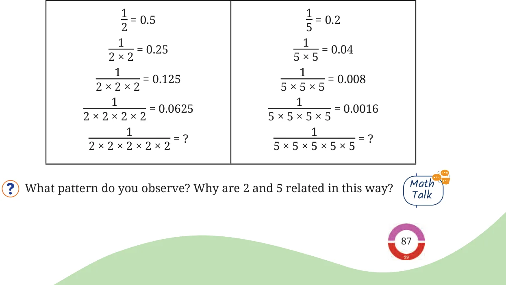

<!DOCTYPE html>
<html lang="en">
<head>
<meta charset="UTF-8">
<meta name="viewport" content="width=device-width,initial-scale=1">
<title>Figure it Out — Another Peek Beyond the Point</title>
<meta name="description" content="Class 7 Mathematics · Part 2 · Another Peek Beyond the Point · Figure it Out">
<link rel="icon" href="data:image/svg+xml,<svg xmlns='http://www.w3.org/2000/svg' viewBox='0 0 100 100'><text y='.9em' font-size='90'>📘</text></svg>">
<link rel="stylesheet" href="../../../assets/book.css">
<link rel="stylesheet" href="https://cdn.jsdelivr.net/npm/katex@0.16.11/dist/katex.min.css" crossorigin="anonymous">
</head>
<body>
<header class="topbar">
<div class="topbar-in">
  <div class="crumb">
    <span class="c1"><a href="../../../index.html">Library</a> · <a href="../../index.html">Class 7 Mathematics · Part 2</a></span>
    <span class="c2">Another Peek Beyond the Point · Figure it Out</span>
  </div>
  <a class="tb-btn" data-nav="prev" href="../../04-another-peek-beyond-the-point/13-dividend-divisor-and-quotient/index.html" title="Dividend, Divisor, and Quotient">←</a>
  <details class="drawer"><summary class="tb-btn" title="Sections in this chapter">☰</summary>
<div class="drawer-panel"><div class="dh">Another Peek Beyond the Point</div><a href="../01-a-quick-recap-of-decimals-4.1/index.html">4.1 A Quick Recap of Decimals</a><a href="../02-decimal-multiplication-4.2/index.html">4.2 Decimal Multiplication</a><a href="../03-is-the-product-always-greater-than-the-numbers/index.html">Is the Product Always Greater than the Numbers; Multiplied?</a><a href="../04-figure-it-out/index.html">Figure it Out</a><a href="../05-decimal-division-4.3/index.html">4.3 Decimal Division</a><a href="../06-division-using-place-value/index.html">Division Using Place Value</a><a href="../07-division-with-a-decimal-quotient/index.html">Division with a Decimal Quotient</a><a href="../08-division-with-a-decimal-dividend/index.html">Division with a Decimal Dividend</a><a href="../09-figure-it-out/index.html">Figure it Out</a><a href="../10-division-with-a-decimal-divisor/index.html">Division with a Decimal Divisor</a><a href="../11-does-this-ever-end/index.html">Does This Ever End?</a><a href="../12-a-magic-number-142857-35/index.html">A Magic Number: 142857 35</a><a href="../13-dividend-divisor-and-quotient/index.html">Dividend, Divisor, and Quotient</a><a href="../14-figure-it-out/index.html" aria-current="page">Figure it Out</a><a href="../15-look-before-you-leap-4.4/index.html">4.4 Look Before You Leap!</a><a href="../16-making-an-adjustment/index.html">Making an Adjustment</a><a href="../17-making-another-adjustment/index.html">Making Another Adjustment</a><a href="../18-making-yet-another-adjustment/index.html">Making Yet Another Adjustment</a><a href="../19-figure-it-out/index.html">Figure it Out</a><a href="../20-summary/index.html">SUMMARY</a></div></details>
  <a class="tb-btn" data-nav="next" href="../../04-another-peek-beyond-the-point/15-look-before-you-leap-4.4/index.html" title="4.4 Look Before You Leap!">→</a>
  <button class="tb-btn" data-theme-toggle title="Toggle light / dark" aria-label="Toggle light or dark theme">◐</button>
</div>
<div class="progress"><span style="width:53.1%"></span></div>
</header>
<main class="wrap">
<div class="sec-head">
  <p class="eyebrow"><a href="../index.html">Chapter 4 · Another Peek Beyond the Point</a></p>
  <h1>Figure it Out</h1>
  <p class="sec-meta">Textbook pages 20–21 · 4 figures</p>
</div>
<article class="prose">
<ul class="qlist">
<li><span class="mk">1.</span><span class="lt">Express the following fractions in decimal form:</span></li>
<li><span class="mk">(a)</span><span class="lt">\(\frac{2}{5}\) (b) \(\frac{13}{4}\)</span></li>
<li><span class="mk">(c)</span><span class="lt">\(\frac{4}{50}\) (d) \(\frac{5}{8}\)</span></li>
<li><span class="mk">2.</span><span class="lt">Find the quotients:</span></li>
<li><span class="mk">(a)</span><span class="lt">\(24.86 \div 1.2\)</span></li>
<li><span class="mk">(b)</span><span class="lt">\(5.728 \div 1.52\)</span></li>
</ul>
<figure class="fig wide"></figure>
<ul class="qlist">
<li><span class="mk">3.</span><span class="lt">Evaluate the following using the information \(156 \times 12 = 1872\).</span></li>
<li><span class="mk">(a)</span><span class="lt">\(15.6 \times 1.2 =\) __________ (b) \(187.2 \div 1.2 =\) __________</span></li>
<li><span class="mk">(c)</span><span class="lt">\(18.72 \div 15.6 =\) __________ (d) \(0.156 \times 0.12 =\) __________</span></li>
<li><span class="mk">4.</span><span class="lt">Evaluate the following:</span></li>
<li><span class="mk">(a)</span><span class="lt">\(25 \div\) ______ \(= 0.025\) (b) \(25 \div\) ______ \(= 250\)</span></li>
<li><span class="mk">(c)</span><span class="lt">\(25 \div\) ______ \(= 2.5\) (d) \(25 \div 10 = 25 \times\) _____</span></li>
<li><span class="mk">(e)</span><span class="lt">\(25 \div 0.10 = 25 \times\) ______ (f) \(25 \div 0.01 = 25 \times\) ______</span></li>
<li><span class="mk">5.</span><span class="lt">Find the quotient:</span></li>
<li><span class="mk">(a)</span><span class="lt">\(2.46 \div 1.5 =\) (b) \(2.46 \div 0.15 =\)</span></li>
<li><span class="mk">(c)</span><span class="lt">\(2.46 \div 0.015 =\)</span></li>
</ul>
<p>Is the quotient obtained in \(24.6 \div 1.5\) the same as the quotient</p>
<div class="mathblock"><p>obtained in \(2.46 \div 0.15\)?</p></div>
<ul class="qlist">
<li><span class="mk">6.</span><span class="lt">A 4 m long wooden block has to be cut into 5 pieces of equal length.</span></li>
</ul>
<p>What is the length of each piece?</p>
<ul class="qlist">
<li><span class="mk">7.</span><span class="lt">If the perimeter of a regular polygon with 12 sides is 208.8 cm, what</span></li>
</ul>
<p>is the length of its side?</p>
<ul class="qlist">
<li><span class="mk">8.</span><span class="lt">3 litres of watermelon juice is shared among 8 friends equally. How</span></li>
</ul>
<p>much watermelon juice will each get? Express the quantity of juice in millilitres.</p>
<ul class="qlist">
<li><span class="mk">9.</span><span class="lt">A car covers 234.45 km using 12.6 litres of petrol. What is the distance</span></li>
</ul>
<p>travelled per litre?</p>
<ul class="qlist">
<li><span class="mk">10.</span><span class="lt">13.5 kg of flour (aata) was distributed equally among 15 students.</span></li>
</ul>
<p>How much flour did each student receive?</p>
<figure class="fig table-fig wide"></figure>
</article>
<nav class="pager"><a class="" data-nav="prev" href="../../04-another-peek-beyond-the-point/13-dividend-divisor-and-quotient/index.html"><span class="dir">← Previous</span><span class="t">Dividend, Divisor, and Quotient</span><span class="ch">Another Peek Beyond the Point</span></a><a class="nx" data-nav="next" href="../../04-another-peek-beyond-the-point/15-look-before-you-leap-4.4/index.html"><span class="dir">Next →</span><span class="t">4.4 Look Before You Leap!</span><span class="ch">Another Peek Beyond the Point</span></a></nav>
</main><footer class="site">Generated from the source textbook PDFs · text, figures and exercises belong to their respective publishers.</footer><script defer src="https://cdn.jsdelivr.net/npm/katex@0.16.11/dist/katex.min.js" crossorigin="anonymous"></script>
<script defer src="https://cdn.jsdelivr.net/npm/katex@0.16.11/dist/contrib/auto-render.min.js" crossorigin="anonymous"
  onload="renderMathInElement(document.body,{delimiters:[
    {left:'\\(',right:'\\)',display:false},
    {left:'$$',right:'$$',display:true},
    {left:'\\[',right:'\\]',display:true}],throwOnError:false,ignoredTags:['script','noscript','style','textarea','pre','code']})"></script>
<script src="../../../assets/book.js"></script>
<script defer src="../../../../assets/search.js"></script>
<script defer src="../../../../assets/screenshot.js"></script>
</body>
</html>
